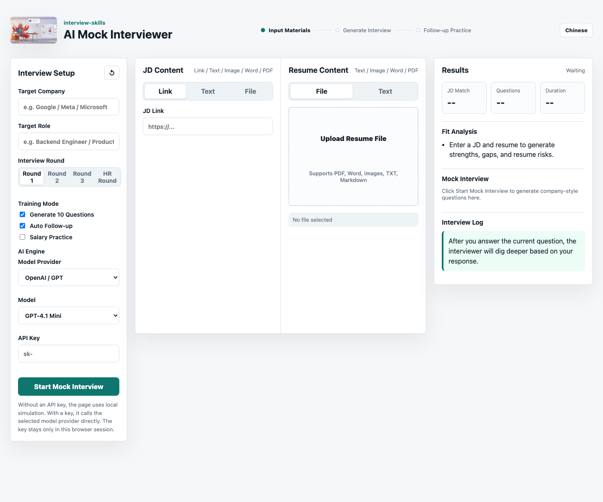

JD and Resume Analysis
Compare the job description against the resume to find strengths, gaps, risks, and likely follow-up areas.
Interview Skills
Generate personalized mock interview questions from a real job description and resume. Practice follow-up questions for coding interviews, system design interviews, behavioral interviews, HR interviews, salary negotiation, FAANG interviews, and Big Tech interviews.
Compare the job description against the resume to find strengths, gaps, risks, and likely follow-up areas.
Generate tailored mock interview questions with difficulty, evaluation points, answer hints, and follow-up paths.
Prepare for Google, Meta, Amazon, AWS, Microsoft, ByteDance, Tencent, Alibaba, and other company-specific interviews.
Search topics: AI mock interview, interview preparation, interview questions, resume-based interview coaching, JD analysis, FAANG interview preparation, coding interview, system design interview, behavioral interview, HR interview, salary negotiation, and Big Tech interview practice.

Enter the target company, role, interview round, and interview mode.
Paste text or upload files so the coach can compare role requirements with candidate experience.
Get personalized mock interview questions with evaluation points and answer direction.
Answer a question and continue with AI follow-up drills based on your response.
Also available in Chinese as 大厂 AI 模拟面试官 Skill.